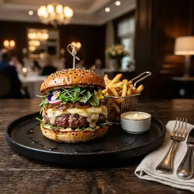
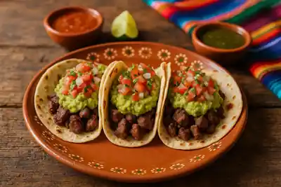
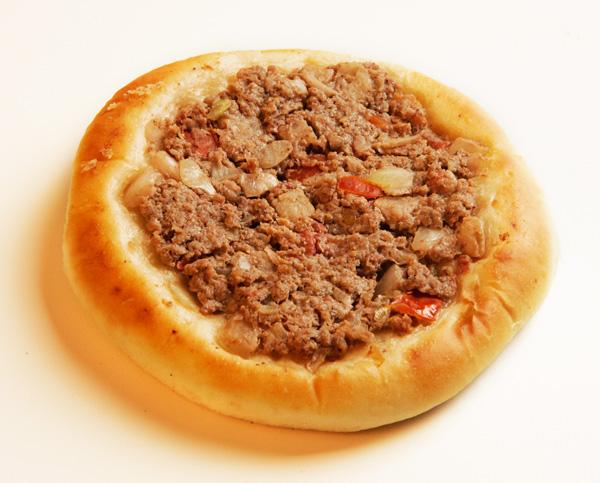
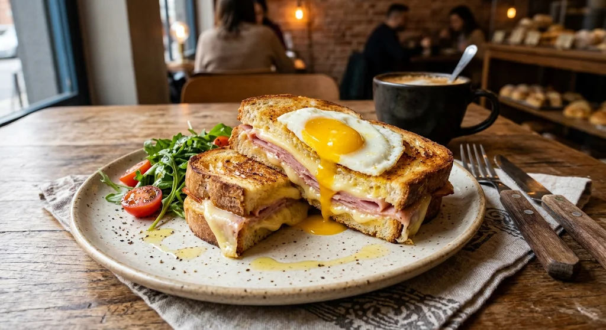

Hambúrguer
Pão brioche macio, blend bovino suculento de 160g, queijo cheddar derretido e maionese artesanal da casa. (Contém glúten e lactose).
R$ 23,90

Pão brioche macio, blend bovino suculento de 160g, queijo cheddar derretido e maionese artesanal da casa. (Contém glúten e lactose).
R$ 23,90

Tortilla crocante de milho recheada com carne moída bem temperada com cominho e páprica, alface fresca picada, cubos de tomate, queijo cheddar derretido e um toque de sour cream.
R$ 25,90
Batatas cortadas em formato palito, fritas até ficarem douradas, sequinhas e levemente salgadas. Acompanha maionese da casa. (Ideal para porções individuais ou para compartilhar).
R$ 15,90

Deliciosa esfiha de carne preparada com massa macia e levemente dourada, recheada com carne.Perfeita para qualquer momento do dia, oferecendo uma combinação irresistível de sabor e qualidade!
R$ 7,00

Delicioso sanduíche preparado com pão macio, presunto, queijo derretido, ovo frito, manteiga, tostado até ficar douradinho e crocante. Uma opção saborosa para qualquer momento!
R$ 8,00
Suco natural feito com laranjas frescas e selecionadas, preparado para oferecer muito sabor e refrescância. Perfeito para acompanhar qualquer lanche!
R$ 7,50